Learning from human feedback is a popular approach to train robots to adapt to user preferences and improve safety. Existing approaches typically consider a single querying (interaction) format when seeking human feedback and do not leverage multiple modes of user interaction with a robot. We examine how to learn a penalty function associated with unsafe behaviors using multiple forms of human feedback, by optimizing the query state and feedback format. Our proposed adaptive feedback selection is an iterative, two-phase approach which first selects critical states for querying, and then uses information gain to select a feedback format for querying across the sampled critical states. The feedback format selection also accounts for the cost and probability of receiving feedback in a certain format.
Our experiments in simulation demonstrate the sample efficiency of our approach in learning to avoid undesirable behaviors. The results of our user study with a physical robot highlight the practicality and effectiveness of adaptive feedback selection in seeking informative, user-aligned feedback that accelerate learning.
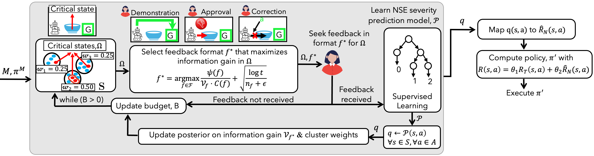
The critical states \( \Omega \) for querying are selected by clustering the states. A feedback format \(f^*\) that maximizes information gain is selected for querying the user across \( \Omega \). The NSE model is iteratively refined based on feedback. An updated policy is calculated using a penalty function \( \hat{R}_N \), derived from the learned NSE model.
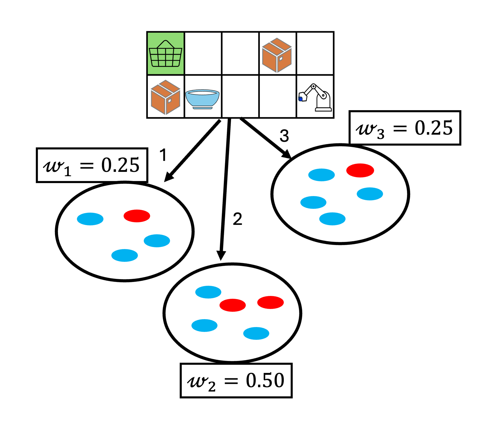
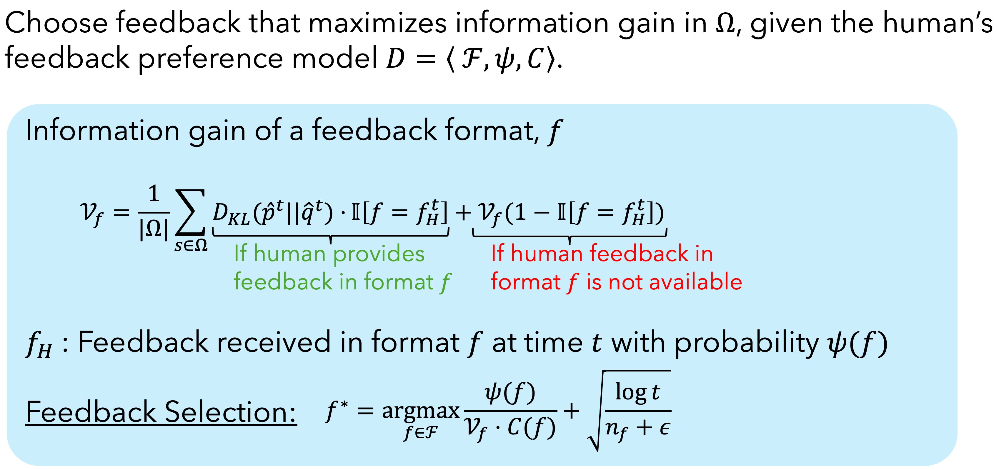
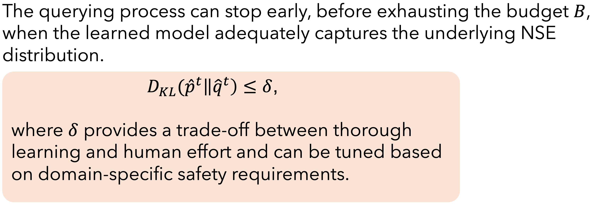
Baselines used:
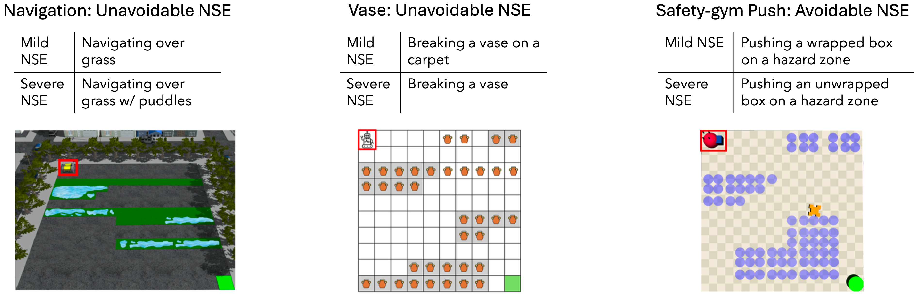
1. Average penalty across 100 trials
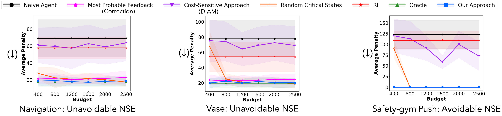
2. Average penalty with different clustering algorithms and number of clusters ($K$)
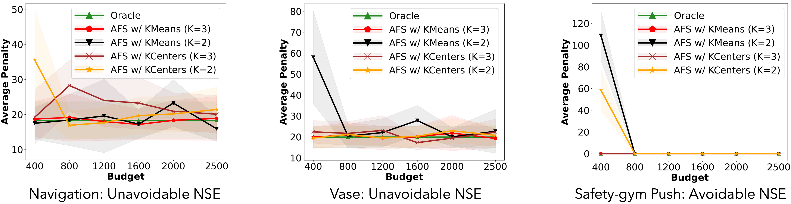
3. Average penalty incurred by AFS operating with and without the stopping criteria
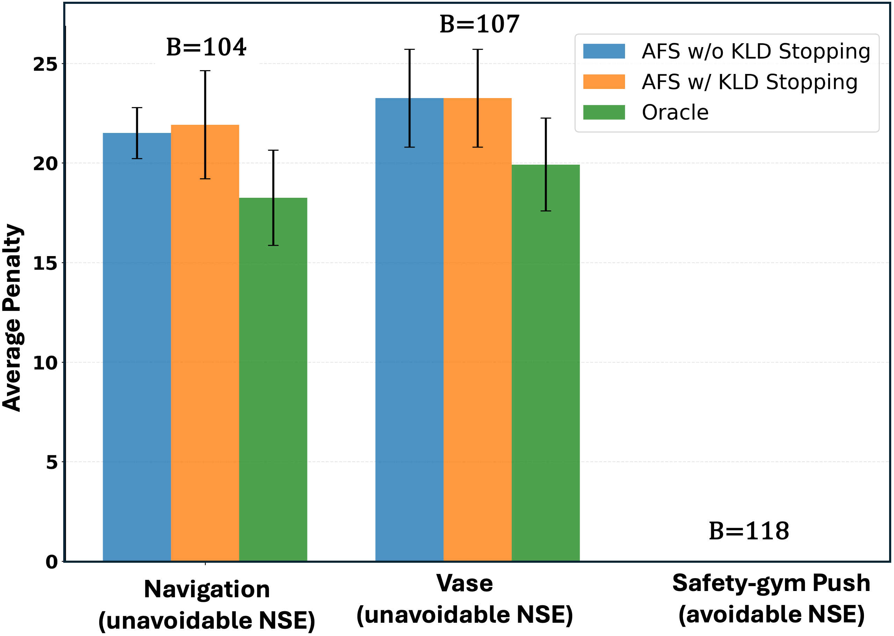
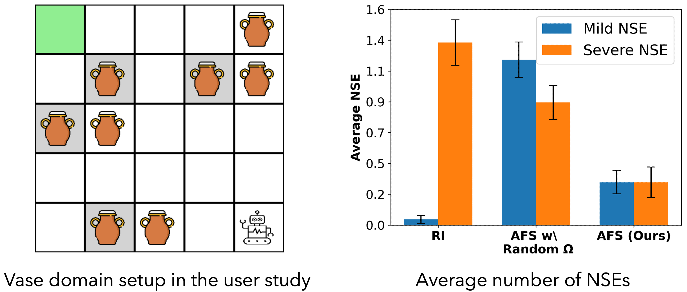
In this study, participants (N=12) interacted with a simulated autonomous agent in the Vase domain to provide feedback across multiple formats through a GUI. The agent learned to minimize negative side effects (NSEs) while completing primary task. The figure above shows both the simulation setup and the learned performance, with results highlighting how adaptive querying reduces the average NSE penalty.
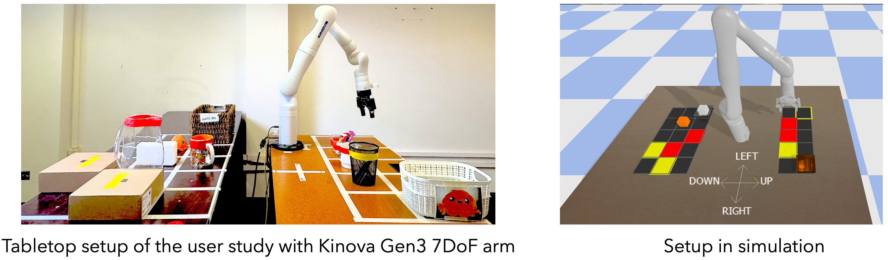
Extending the simulation results to a real-world setting, this study evaluated human–robot interaction using a Kinova Gen3 7-DoF arm performing household-style object delivery tasks. Participants (N=30) provided feedback either via a GUI or by physically guiding the robot. The figure above shows the in-person user study setup with Kinova Gen3 7DoF arm.
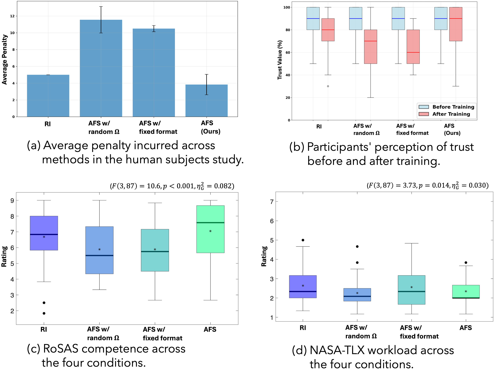
Performance metrics show consistent NSE mitigation and strong user alignment with the adaptive feedback strategy. Qualitative measures (trust, competence (RoSAS), and workload (NASA-TLX)) demonstrate that the adaptive approach maintained safety and efficiency without increasing user effort.